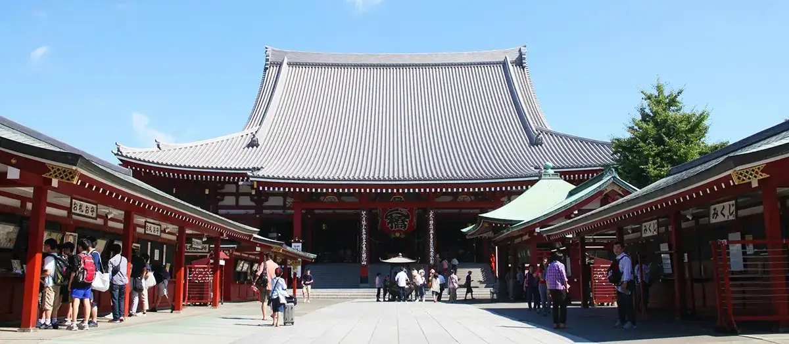
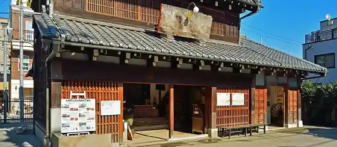
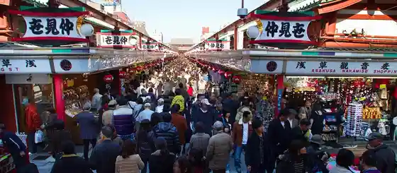
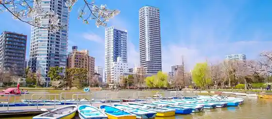

Taito, Tokyo: things to do, food and stays
Taito · Tokyo
Taito
Highlighted on the Tokyo map.

Sights
Senso-ji Temple
Shitamachi Museum Fusetsu Tenjijo (Kyu Yoshidaya Saketen)

Asakura Museum of Sculpture
Nakamise

Ueno Park

The Ueno Royal Museum
Kyu-Iwasaki-tei Gardens
Sumida Park
The National Museum of Western Art
Yanaka Cemetery
Matsuzakaya Ueno Store
Taiko Kan
Ueno Toshogu Shrine
Kochi Kameishi Hi (Asakusa Shrine)
Dining
Takajo Kotobuki
鷹匠壽

Restaurant in Taito, Tokyo.
nacol

European restaurant in Taito, Tokyo.
Nabeno-Ism
ナベノ-イズム

European restaurant in Taito, Tokyo.
Hommage
オマージュ

European restaurant in Taito, Tokyo.
Iriya Kishimojin Monzen no Daya Reservation
入谷鬼子母神門前のだや

Seafood restaurant in Taito, Tokyo.
Fakalo pizza gallery
ファカロー ピッツァ ギャラリー

European restaurant in Taito, Tokyo.
Sushi Oku
鮨 奥

Seafood restaurant in Taito, Tokyo.
Motenashi Kuroki
饗 くろ喜

Noodle restaurant in Taito, Tokyo.
Think

Sweets and bakery shop in Taito, Tokyo.
Asakusa Juroku Reservation
浅草じゅうろく

Noodle restaurant in Taito, Tokyo.
Usagiya
うさぎや

Sweets and bakery shop in Taito, Tokyo.
Tempura Shimomura
てんぷら 下村

Seafood restaurant in Taito, Tokyo.
Men Mitsui
麺 みつヰ

Noodle restaurant in Taito, Tokyo.
French Gashi Patissier Chocolatier Inamura Shozo
フランス菓子 パティシエ ショコラティエ イナムラショウゾウ

Sweets and bakery shop in Taito, Tokyo.
Restaurant Kamiya
レストラン香味屋

European restaurant in Taito, Tokyo.
Yakiniku Uguisudani En
焼肉 鶯谷園

Meat restaurant in Taito, Tokyo.
Kuriya Kurogi
廚 くろぎ

Cafe in Taito, Tokyo.
Kabuki
蕪木

Cafe in Taito, Tokyo.
KOTARO Hasegawa DOWNTOWN CUISINE

European restaurant in Taito, Tokyo.
Kameju
亀十

Sweets and bakery shop in Taito, Tokyo.
HARU
麺処 晴

Noodle restaurant in Taito, Tokyo.
Pelican
パンのペリカン

Sweets and bakery shop in Taito, Tokyo.
Chiba Ya
千葉屋

Sweets and bakery shop in Taito, Tokyo.
Ramen Kai
らーめん改

Noodle restaurant in Taito, Tokyo.
Waguri Ya Yanaka ten
和栗や 谷中店

Cafe in Taito, Tokyo.
Spice Palette
スパイスパレット

Izakaya or bar in Taito, Tokyo.
Sichuan Hashoku Reservation
四川料理 巴蜀

Restaurant in Taito, Tokyo.
Ponta Honke
ぽん多本家

Meat restaurant in Taito, Tokyo.
Fruit Parlour Goto
フルーツパーラーゴトー

Cafe in Taito, Tokyo.
Umemura
梅むら

Sweets and bakery shop in Taito, Tokyo.
Himitsu Do
ひみつ堂

Sweets and bakery shop in Taito, Tokyo.
Asakusa Naniwaya
浅草浪花家

Sweets and bakery shop in Taito, Tokyo.
Cafe Bach

Cafe in Taito, Tokyo.
Asakusa Sanboa
浅草サンボア

Izakaya or bar in Taito, Tokyo.
Kayaba Coffee
カヤバ珈琲

Cafe in Taito, Tokyo.
Chugoku Ikkyosai Bai En Reservation
中国意境菜 白燕

Noodle restaurant in Taito, Tokyo.
Stay
Asakusa Byu Hotel
浅草ビューホテル

浅草ビューホテル is a hotel in Taito, Tokyo.
Asakusa View Hotel Annex Rokku
浅草ビューホテルアネックス六区

Asakusa View Hotel Annex Rokku is a hotel in Taito, Tokyo.
Natural Hot Spring Ryoten no Yu Onyado Nono Asakusa Annex (Dormy Inn Chain)
天然温泉 凌天の湯 御宿 野乃浅草別邸（ドーミーインチェーン）

Natural Hot Spring Ryoten no Yu Onyado Nono Asakusa Annex (Dormy Inn Chain) is a hot spring lodging in Taito, Tokyo.
Hotel Keihan Asakusa
ホテル京阪浅草

Hotel Keihan Asakusa is a hotel in Taito, Tokyo.
Hotel Kuraunhiruzu Ueno Puremia
ホテルクラウンヒルズ上野プレミア

ホテルクラウンヒルズ上野プレミア is a hotel in Taito, Tokyo.
APA Hotel <Ueno Ekimae>
アパホテル〈上野駅前〉

APA Hotel <Ueno Ekimae> is a hotel in Taito, Tokyo.
Best Western Hotel Fino Tokyo Akihabara
ベストウェスタンホテルフィーノ東京秋葉原

Best Western Hotel Fino Tokyo Akihabara is a hotel in Taito, Tokyo.
the b asakusa
the b 浅草

the b asakusa is a place to stay in Taito, Tokyo.
Villa Fontaine Tokyo Ueno Okachimachi | Sumitomo Realty & Development
ヴィラフォンテーヌ東京上野御徒町｜住友不動産

Villa Fontaine Tokyo Ueno Okachimachi | Sumitomo Realty & Development is a place to stay in Taito, Tokyo.
Kaminarimon Ryokan
雷門旅館

Kaminarimon Ryokan is a traditional ryokan inn in Taito, Tokyo.